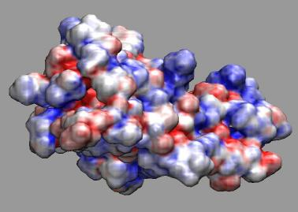

The "volume" coloring method in VMD can be used to color solvent surfaces,
isosurfaces, and other representations by electrostatic potential, density
or other volumetric properties. This brief tutorial gives a
step-by-step procedure for effectively using the "volume" coloring feature
to create such figures.

First, you'll need to
download and unpack these tutorial example files,
which were produced using the APBS plugin in VMD.
If you would like to see the end result immediately, you can load the
example into VMD, with "vmd -e fas2.vmd" at the command, or by using
the "cd" command in the VMD text console to change to the working directory
containing the example files, and then using the "File -- Load State" menu
item in the graphical interface to load the fas2.vmd saved state.
The basic process for coloring structure data or surface meshes by
potential is as follows:
- Load structure, surface mesh, or solvent surface density grid
into a molecule in VMD.
(e.g. 'mol new structure.pqr' or load the PQR file into a new
molecule, using the graphical interface)
- Display the structure with your favorite representation.
(e.g. set the drawing method to MSMS, Surf, or if you've loaded an
APBS solvent accessibility map, you can use the Isosurface
representation instead)
- Add the potential grid (or other volumetric data you wish to color
the structure with) into the SAME molecule.
(e.g. 'mol addfile pot.dx')
- Once both the structure and potential are loaded into the same molecule,
the next step is to set the structure coloring method to "Volume".
The volume coloring method requires that you select one of the loaded
volumetric datasets (from within the same molecule). If you only have
on volumetric dataset loaded, it will be selected for you automatically.
- At this point, you will see the coloring of the surface change, but the
the coloring range may not be set to the appriate range for the data,
so we must adjust the "color scale data range" to be able to see the
potential values we're interested in more clearly. The color scale
data range settings are located in the "trajectory" tab of the
graphical representations window. A good initial range for APBS potential
data is -10 to 10. If you prefer more intense colors, you can
set the range lower, to something like -4 to 4. Potential
values outside of the minima and maxima defined in the
color scale data range will be clamped to solid red and solid blue
(in the case of the RWB color scale).
- The last item is to change the active vmd color scale, to something
appropriate for viewing potential data, such as the "RWB" color scale
which displays low or (in this case negative) values in red,
and high or positive values in blue. The color scale is set in the
Color menu, in the "color scale tab". In new versions of VMD, the
default color scale is already set to "RWB", so users of new versions
may not feel the need to change the color scale.
{kind=link}